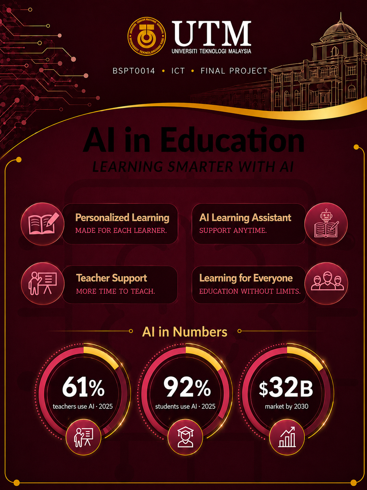
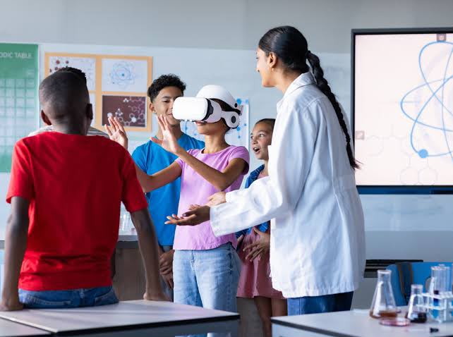
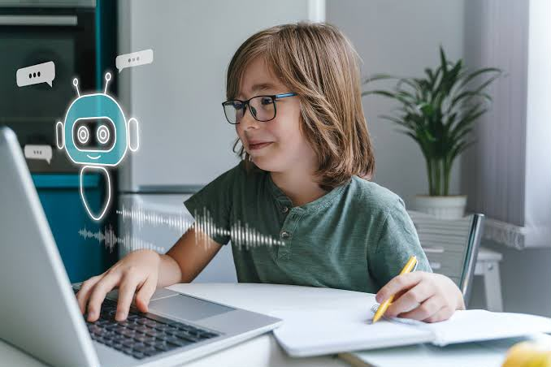

Artificial Intelligence in Education
Enhancing teaching and learning experiences
Enhancing teaching and learning experiences
Long before computers or the internet, the very first word revealed in the Qur'an was a simple command: "Read." As Muslim students, that means a lot to us. Learning is not only useful for our lives, it is part of our faith.
اقْرَأْ بِاسْمِ رَبِّكَ الَّذِي خَلَقَ
"Read, in the name of your Lord who created."
Qur'an, Surah Al-‘Alaq (96:1)The Prophet Muhammad (peace be upon him) taught that seeking knowledge is a duty on every Muslim. So for us, studying is not only about marks, it is something our religion asks of us.
People once learned with a pen and a book. Then came the computer and the internet, and now Artificial Intelligence. The tools keep changing, but the goal of learning stays the same.
Islam also asks us to be honest. A good tool should help us truly understand, not cheat, and we should always check that what it tells us is right.
This is where our project starts. The UTM motto, "Kerana Tuhan Untuk Manusia" (For God, For Mankind), carries the same spirit. And one of the newest tools for learning today is Artificial Intelligence — which is what the rest of this website is about.
So what is AI exactly? Artificial Intelligence (AI) is a computer program that can learn from data and make its own decisions, a bit like a human mind. In school, it is used to help both students and teachers — giving extra practice, answering questions at any hour, or marking a quiz in seconds.
We picked this topic because AI is already part of student life. A lot of us use tools like ChatGPT and Khanmigo to study every day. We wanted to find out how much they really help, and what problems they can bring too.
AI can change a lesson to match each student. Someone who is struggling gets more practice, while someone who finds it easy moves on to harder questions.
A tool like Khanmigo can answer questions at any time, even late at night. Instead of just giving the answer, it asks the student questions so they work it out themselves.
Marking and planning take up a big part of a teacher's day. AI can take over some of that, which leaves more time for the students.
Tools like translation and text-to-speech make a lesson easier to follow for students who speak another language or who learn in a different way.
In a single year, AI use in schools shot up. Here are a few numbers from 2024 and 2025.
We made a poster that puts the whole idea of our topic on one page.

Three short videos that look at AI in education from different sides — the chances, the worries, and how it is already used in real classrooms.
A clear overview of the chances and the challenges of using AI in education.
Sal Khan explains how AI could make learning better instead of worse.
A look at how schools in China are already using AI in real classrooms.
A few pictures of learning and technology side by side. Click any image to open it bigger.


Want to read more? These websites are a good place to start.
This topic is close to home for us too. Our own university, Universiti Teknologi Malaysia (UTM), is already working with AI in education.
UTM has its own faculty just for AI, where students learn how to build the kind of tools we talk about in this project.
The Centre for Advancement in Digital and Flexible Education helps lecturers teach online and use technology in their classes.
Through its open and distance learning programmes, UTM lets students study from almost anywhere.
A few quick questions to see what you remember. Just click an answer.
Score: 0 / 4
Our group members for this ICT project:
| Role | Name |
|---|---|
| Leader | Mohammed A. K. Yousef |
| Member | Mohammad Abdulwahab |
| Member | Mohamed Gehad |
| Member | Abdalah Khalil |
| Member | Zakarya Esmail Saif Abdulkhaleq |
| Member | Ahmed Adel Abdullah Mahmoud |